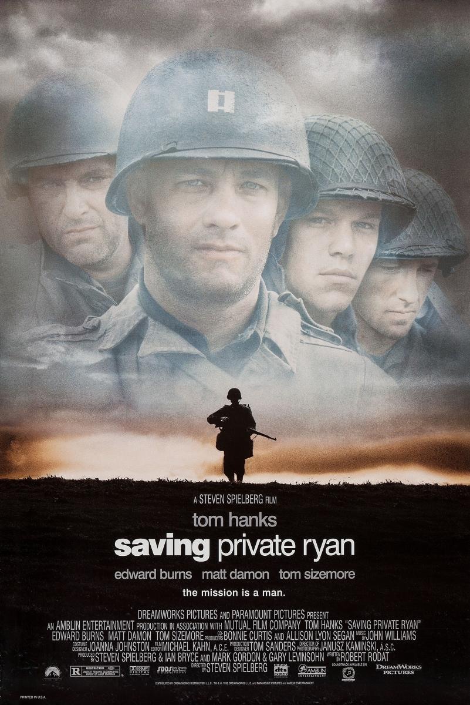
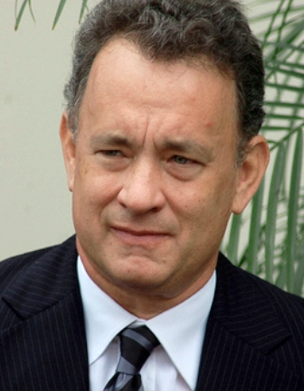
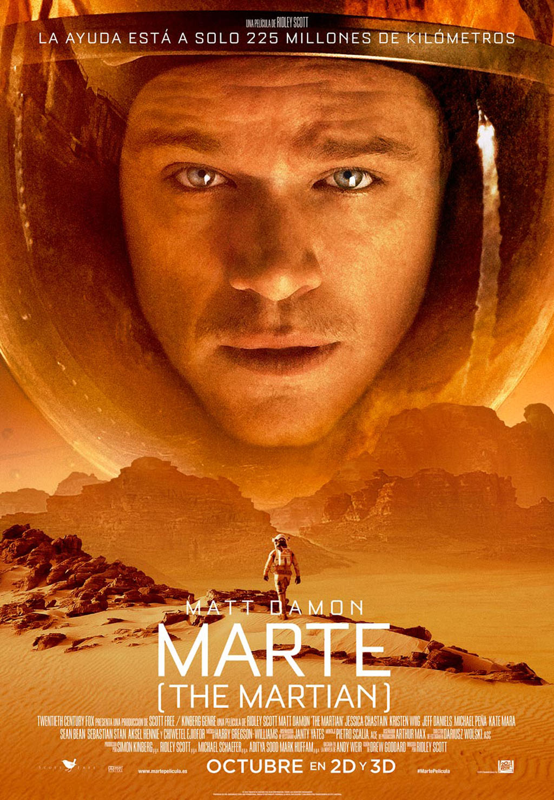
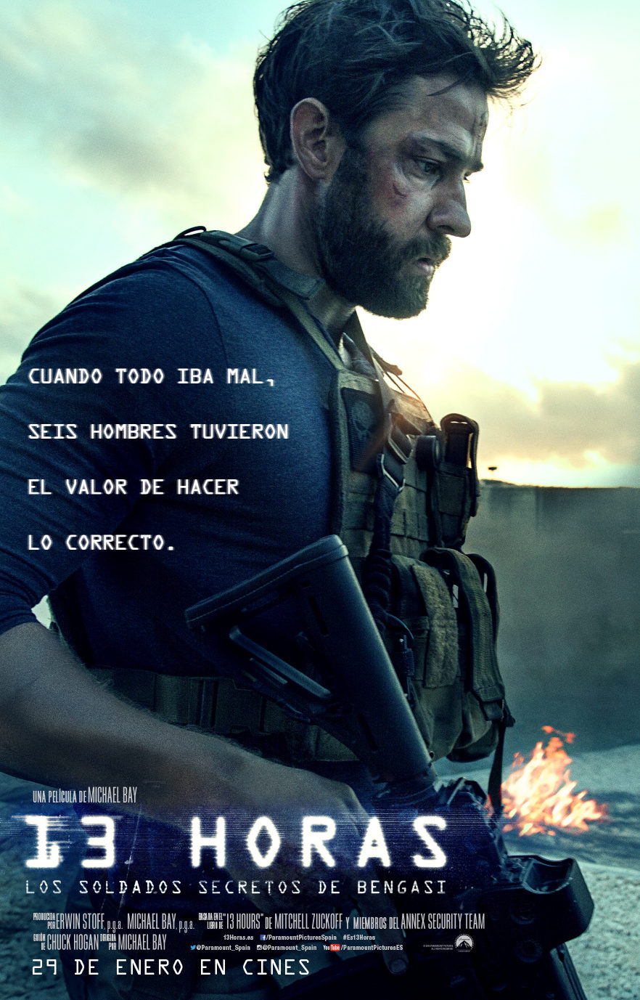
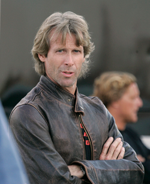
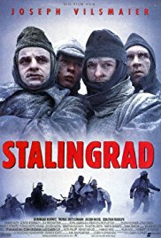
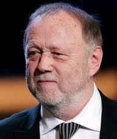
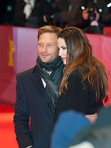
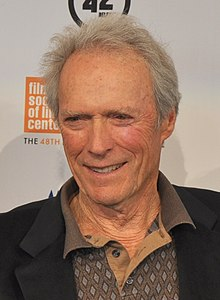
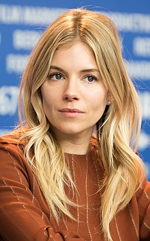

Películas favoritas
Películas favoritas
Índice
Salvar al Soldado Ryan
Carátula
Director
Protagonista Masculino
The Martian
Carátula
Director
Protagonista Masculino
Protagonista Femenino
13 horas: Los Soldados Secretos de Bengasi
Carátula
Director
Protagonista Masculino
Stalingrado (1993)
Carátula
Director
Protagonista Masculino
El Francotirador
Carátula
Director
Protagonista Masculino
Protagonista Femenino
Salvar al Soldado Ryan
Salvar al Soldado Ryan

Carátula de Salvar al Soldado Ryan
Director:
Steven Spielberg
Foto del director de Salvar al Soldado Ryan
Protagonista masculino:
Tom Hanks

Foto del protagonista masculino de Salvar al Soldado Ryan
The Martian
The Martian

Carátula de The Martian
Director:
Ridley Scott
Foto del director de The Martian
Protagonista masculino:
Matt Damon
Foto del protagonista masculino de The Martian
Protagonista femenino:
Jessica Chastain
Foto de la protagonista femenina de The Martian
13 horas: Los Soldados Secretos de Bengasi
13 Horas: Los Soldados Secretos de Bengasi

Carátula de 13 Horas: Los Soldados Secretos de Bengasi
Director:
Michael Bay

Foto del director de 13 Horas: Los Soldados Secretos de Bengasi
Protagonista masculino:
John Krasinski
Foto del protagonista masculino de 13 Horas: Los Soldados Secretos de Bengasi
Stalingrado (1993)
Stalingrado (1933)

Carátula de Stalingrado (1933)
Director:
Joseph Vilsmaier

Foto del director de Stalingrado (1933)
Protagonista masculino:
Thomas Kretschmann

Foto del protagonista masculino de Stalingrado (1933)
El Francotirador
El Francotirador
Carátula de El Francotirador
Director:
Clint Eastwood

Foto del director de El Francotirador
Protagonista masculino:
Bradley Cooper
Foto del protagonista masculino de El Francotirador
Protagonista femenina:
Sienna Miller

Foto de la protagonista femenina de El Francotirador